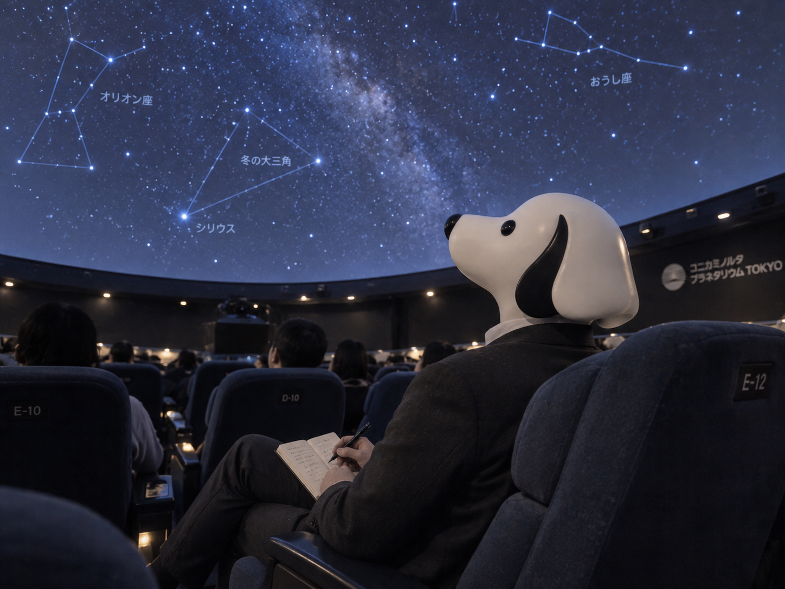

CEO'S NOTE
星を見に行って、メモは一本線になる

こんにちは。TY-Dev Works CEOのT-Yです。
今日は一人で、プラネタリウムに来ています。
週明けに、なぜ星を見るのか。
たぶん、月曜日だからです。
理由としては少し弱いですが、気持ちとしてはかなり本当です。
静かな場所で、少し頭の回転を落としたかったのだと思います。
パソコンのファンみたいな言い方になりました。
入場前、売店で小さな星座ノートを見つけました。
「上映中に何か思いついたら、ここに書こう」
そう考えて買いました。
いかにも考えるCEOです。
準備としては完璧に見えます。
席に着き、膝の上にノートを置き、ペンも出しました。
これでいつアイデアが降ってきても大丈夫です。
問題は、その数分後に会場がかなり暗くなることでした。
大事な前提を、きれいに見落としていました。
上映が始まると、天井いっぱいに星が広がります。
最初に思ったのは、やっぱりすごいな、でした。
次に思ったのは、ペン先が見えないな、でした。
アイデアは少し浮かびました。
でも、ノートのどこに書いているのかが分かりません。
左のページなのか、右のページなのか。
そもそもページの上なのか下なのか。
確認しようにも、暗いので確認できません。
僕はしばらく、宇宙の話を聞きながら紙の上をそっとなぞっていました。
たぶん周囲から見ると、静かに署名をためらっている人です。
途中であきらめて、ノートを閉じました。
メモはあとで書けばいい。
今はちゃんと見よう。
その判断は正しかったと思います。
星の説明、季節の空、遠い銀河の話。
どれも落ち着いていて、少し気持ちが整いました。
普段の開発は、どうしても「次に何をするか」を考え続けます。
でも、ときどきは「今見えているものをそのまま受け取る」時間も必要です。
ソフトウェアも、本当はそういう体験を支えるものでありたいと思っています。
使う人が画面の複雑さを意識しなくても、目的に自然にたどり着けること。
それが理想です。
休憩中に、今日のAIニュースを読みました。
Reutersによると、Deutsche TelekomはAIと自動化によって2030年までに間接コストを25億ユーロ削減できる見通しを示したそうです。
ネットワーク運用やサポート業務など、表からは見えにくい部分の効率化が中心だと報じられていました。
この話を読んで、プラネタリウムのことを思い出しました。
頭上にはきれいな星空が広がっていて、僕はただ見上げているだけです。
でも、その裏側では投影、制御、音響、案内、運営の仕組みが静かに働いています。
目立たないけれど、体験の質はそこに支えられている。
これはソフトウェアでも同じです。
良い仕組みは、目立ちすぎないことがあります。
速い。
迷わない。
待たない。
変なところで止まらない。
そういう当たり前が続いているとき、利用者は技術を意識しません。
でも、意識されないことこそ成功、という場面は多いです。
TY-Dev Worksでも、派手に見せるための機能より、毎日使う中で静かに効いてくる使いやすさを大切にしたいと思っています。
操作が素直であること。
動きが軽いこと。
必要なところでちゃんと助けになり、不要なところで邪魔をしないこと。
星空の主役が投影装置ではないように、ソフトウェアの主役もソフトウェアそのものではありません。
その先でやりたいことです。
上映が終わって外へ出て、明るいロビーでノートを開きました。
メモはどうなっていたか。
一本の長い斜線と、小さな点がひとつありました。
内容としては、かなり抽象的です。
ただ、見方によっては流れ星にも見えます。
少しだけ、今日のテーマに合っています。
ということにしました。
次回からは、星を見る日にメモを取るのではなく、見終わってから書こうと思います。
人間の運用で解決できることは、案外まだ多いです。
それでは、また。
Simple Software. A Better Tomorrow.
TY-Dev Works CEO
T-Y 🐕